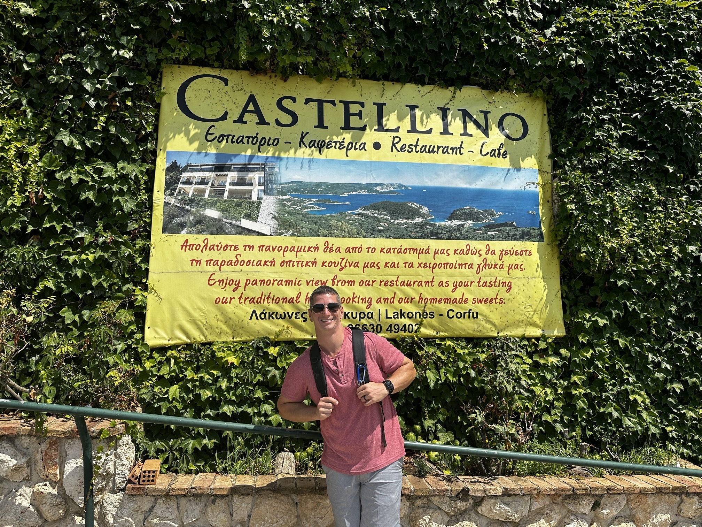

My Favorite places !
Greece - Zakynthos, Corfu-
Zakynthos, also known as Zante, is a picturesque Greek island located in the Ionian Sea. It is the third-largest of the Ionian Islands and is situated to the west of the Greek mainland. Here are some key features and aspects of Zakynthos: Natural Beauty: Zakynthos is renowned for its stunning natural landscapes. The island boasts beautiful beaches with crystal-clear turquoise waters, such as Navagio Beach, also known as Shipwreck Beach. This iconic beach is famous for its white sand and the wreck of a ship that ran aground there in 1980. Blue Caves: The Blue Caves are another natural wonder on the island. These sea caves, located on the northern coast, are known for their brilliant blue waters created by the reflection of sunlight on the white limestone rocks. Flora and Fauna: Zakynthos is rich in biodiversity, and the National Marine Park of Zakynthos, established to protect the endangered loggerhead sea turtles (Caretta caretta) that nest on the island, is one of the key conservation areas. Venetian Influence: The island has a history of Venetian rule, and remnants of this influence can be seen in its architecture. The capital city, Zakynthos Town, features a mix of Venetian and Byzantine architectural styles. Cultural Heritage: Zakynthos has a rich cultural heritage with various museums, churches, and historical sites. The Church of St. Dionysios in Zakynthos Town is notable for housing the relics of the island's patron saint, St. Dionysios. Local Cuisine: Greek cuisine is prevalent on the island, with traditional dishes featuring fresh seafood, olives, olive oil, and locally-produced wine. Tavernas and restaurants offer a taste of authentic Greek flavors. Tourism: Zakynthos is a popular tourist destination, attracting visitors with its natural beauty and cultural offerings. Tourism plays a significant role in the island's economy, and visitors can enjoy a range of activities, from water sports and boat trips to exploring historical sites. Accessibility: The island is accessible by air and sea. Zakynthos International Airport connects the island to major European cities, and there are also ferry services from the Greek mainland and other nearby islands. Zakynthos is a well-loved destination for those seeking a mix of natural beauty, cultural exploration, and relaxation by the Ionian Sea.
Corfu , also known as Kerkyra, is another stunning Greek island situated in the Ionian Sea. Here are some key features and details about Corfu: Geography: Corfu is the second-largest of the Ionian Islands and is located at the northwest corner of Greece, near the coast of Albania. Its strategic location has contributed to its rich history and cultural influences. Venetian Architecture: Corfu has a strong Venetian influence due to several centuries of Venetian rule. The Old Town of Corfu, a UNESCO World Heritage site, is characterized by its well-preserved Venetian architecture, narrow streets, and historic buildings. The Liston Promenade, with its arcaded terraces, is a popular spot within the Old Town. Achilleion Palace: This palace, built by Empress of Austria Elisabeth of Bavaria, also known as Sisi, is located on the island. It offers panoramic views of the island and the Ionian Sea. The palace is dedicated to the mythical hero Achilles. Paleokastritsa Monastery: This monastery, perched on a hill overlooking the Ionian Sea, is one of the most famous on the island. It is dedicated to the Virgin Mary and offers breathtaking views of the surrounding landscape. Beaches: Corfu is known for its beautiful beaches with crystal-clear waters. Some popular beaches include Paleokastritsa, Glyfada, and Canal d'Amour. Each beach has its unique charm, offering opportunities for relaxation and water activities. Cultural Heritage: Corfu has a rich cultural heritage, with numerous museums and historical sites. The Archaeological Museum of Corfu, the Museum of Asian Art, and the Church of Saint Spyridon are among the notable cultural attractions. Corfu Cuisine: The island's cuisine is a blend of Greek, Italian, and Venetian influences. Visitors can savor local dishes such as sofrito (beef cooked in a white wine and garlic sauce), bourdeto (fish stew), and pastitsada (a meat dish with pasta). Green Landscapes: Corfu is known for its lush greenery and scenic landscapes. The interior of the island is dotted with olive groves, cypress trees, and charming villages. Events and Festivals: Corfu hosts various events and festivals throughout the year, including religious celebrations, cultural festivals, and music events. The Easter celebrations in Corfu are particularly famous and attract visitors from around the world. Tourism: Tourism is a significant part of Corfu's economy, and the island welcomes visitors seeking a combination of history, culture, and natural beauty. Corfu's unique blend of history, culture, and natural attractions makes it a popular destination for those looking to explore the charm of the Ionian Islands.
Click for more!Canada -British Columbia, Nanaimo Island-

British Columbia (BC) is a province located on the west coast of Canada. Here are some key features and details about British Columbia: Geography: British Columbia is known for its diverse geography, ranging from coastal rainforests to the rugged Rocky Mountains. It is bordered by the Pacific Ocean to the west, the province of Alberta to the east, the U.S. state of Alaska to the northwest, and the U.S. states of Washington, Idaho, and Montana to the south. Cities: The capital city of British Columbia is Victoria, which is located on Vancouver Island. The largest city, however, is Vancouver, situated on the mainland. Vancouver is a major cultural and economic hub, known for its diverse population and stunning natural surroundings. Natural Beauty: BC is renowned for its breathtaking natural landscapes. The province is home to mountains, forests, lakes, and coastline. The Pacific Rim National Park Reserve on Vancouver Island, Whistler Blackcomb ski resort, and the Okanagan Valley are just a few examples of the province's natural attractions. Indigenous Peoples: The area now known as British Columbia has a rich history of Indigenous cultures. There are many Indigenous nations with distinct languages, art, and traditions, and the province is committed to acknowledging and respecting the rights and cultures of its Indigenous peoples. Economy: British Columbia has a diverse economy with key sectors including natural resources (forestry, mining), technology, film and television production, tourism, and agriculture. Vancouver, in particular, is a major economic center and a gateway for trade between Canada and the Asia-Pacific region. Climate: The climate in British Columbia varies significantly depending on the region. The coastal areas experience milder temperatures and higher precipitation, while the interior regions, including the Okanagan Valley, have a more arid climate. The mountainous areas receive significant snowfall in the winter, making them popular for winter sports. Cultural Diversity: British Columbia is known for its cultural diversity. Vancouver, in particular, is often cited as one of the most multicultural cities in the world, with a mix of ethnicities and a rich tapestry of cultural influences. Parks and Outdoor Activities: The province offers numerous opportunities for outdoor activities. BC is home to several national parks, provincial parks, and outdoor recreational areas, providing opportunities for hiking, skiing, kayaking, and wildlife watching. Transportation: Transportation in British Columbia is facilitated by an extensive highway system, ferry services (particularly important for connecting the mainland to Vancouver Island), and major airports in cities like Vancouver and Victoria. Environmental Conservation: BC places a strong emphasis on environmental conservation and sustainability. Efforts are made to protect the province's natural resources and wildlife, and there is a commitment to green initiatives. British Columbia's combination of natural beauty, cultural diversity, and economic vibrancy makes it a unique and dynamic part of Canada. It is a popular destination for both residents and visitors seeking a mix of outdoor adventure and urban experiences.
Nanaimo , the city: Geography: Nanaimo is situated on the eastern coast of Vancouver Island, facing the Strait of Georgia. It is the second-largest city on the island, after Victoria. Economy: Historically, Nanaimo's economy has been based on resource industries such as coal mining and forestry. In recent years, there has been diversification into sectors like technology, tourism, and healthcare. Cultural Attractions: Nanaimo has a vibrant cultural scene with numerous art galleries, theaters, and cultural events. The city hosts festivals, live music performances, and community events throughout the year. Outdoor Activities: The surrounding area offers various outdoor activities, including hiking, kayaking, and boating. Newcastle Island, just a short ferry ride from Nanaimo's harbor, is a popular spot for walking, cycling, and picnicking. Harborfront: Nanaimo's harborfront is a focal point of the city. It features a marina, waterfront parks, and a seawall where residents and visitors can enjoy scenic views of the harbor and nearby islands. Nanaimo Bar: Nanaimo is also famous for the Nanaimo Bar, a sweet and rich dessert named after the city. It consists of three layers: a crumbly, coconut and nut base, a custard-flavored middle layer, and a chocolate topping. Transportation: Nanaimo is accessible by ferry from Horseshoe Bay in West Vancouver, as well as by air through the Nanaimo Airport. The city has a network of highways connecting it to other parts of Vancouver Island. Education: Nanaimo is home to Vancouver Island University, which attracts students from various parts of Canada and around the world. Nanaimo is a charming city with a mix of outdoor recreation, cultural amenities, and a picturesque waterfront. If you were referring to a different "Nanaimo Island," please provide more details, and I'll do my best to provide accurate information.
Click for more!Italy -Venice, Bari-
Venice is a city in northeastern Italy and the capital of the Veneto region. Known for its unique architecture, canals, and rich history, Venice is one of the most iconic and romantic cities in the world. Here are some key aspects of Venice: Geography: Venice is situated on a group of 118 small islands separated by canals and linked by over 400 bridges. The city is located in the Venetian Lagoon, an enclosed bay of the Adriatic Sea. Canals and Gondolas: Venice is renowned for its intricate network of canals, which serve as the primary means of transportation within the city. Gondolas, traditional flat-bottomed boats, are a popular and romantic way to explore the canals. Architecture: The architecture of Venice is distinctive, featuring Gothic, Renaissance, and Baroque styles. The city is known for its elegant palaces, churches, and public buildings. St. Mark's Basilica, with its Byzantine and Gothic elements, is one of the most famous landmarks. St. Mark's Square (Piazza San Marco): This iconic square is the main public square in Venice and is surrounded by important buildings such as St. Mark's Basilica, the Doge's Palace, and the Campanile (bell tower). Doge's Palace: The Doge's Palace is a symbol of Venice's political and social history. It served as the residence of the Doge (ruler of Venice) and the seat of government. Rialto Bridge: The Rialto Bridge is one of the four bridges spanning the Grand Canal and is a popular landmark in Venice. It is known for its shops and panoramic views of the city. Venetian Masks and Carnival: Venice is famous for its traditional masks, often worn during the annual Carnival of Venice. The carnival is a festive period marked by elaborate costumes, masks, and various events. Art and Culture: Venice has a rich artistic and cultural heritage. The city has been home to many prominent artists, including Titian, Tintoretto, and Canaletto. The Gallerie dell'Accademia and the Peggy Guggenheim Collection are among the city's notable art museums. Venetian Cuisine: Venetian cuisine is influenced by its maritime location. Seafood, risotto, polenta, and cicchetti (small tapas-like dishes) are common in the local cuisine. Venetian cuisine is often paired with regional wines. Challenges: Venice faces challenges such as rising sea levels, erosion, and overtourism. The city is actively working on solutions to preserve its unique environment and cultural heritage. Venice's unparalleled beauty and cultural significance make it a popular destination for tourists, art enthusiasts, and romantics alike. The city's reliance on canals and absence of cars contribute to its distinct and timeless charm.
Bari is a major port city on the Adriatic Sea, located in the southern part of Italy. It is the capital of the Apulia (Puglia) region and serves as an economic and cultural hub for the surrounding area. Here are some key aspects of Bari: Geography: Bari is situated on the eastern coast of Italy, facing the Adriatic Sea. It is an important port city and serves as a gateway to the Adriatic and the Balkans. Historical Significance: Bari has a rich history that dates back to ancient times. The city was a significant center during the Roman and Byzantine periods, and it played a crucial role in medieval trade routes. Old Town (Bari Vecchia): Bari's historic Old Town is a labyrinth of narrow streets, historic buildings, and charming squares. Highlights include the Basilica di San Nicola, a Romanesque church that houses the relics of Saint Nicholas. Basilica di San Nicola: This important church is dedicated to Saint Nicholas, a revered figure in both Western and Eastern Christian traditions. The basilica is an important pilgrimage site and a stunning example of Romanesque architecture. Bari Cathedral (Cattedrale di San Sabino): Another notable religious site, the Bari Cathedral, is dedicated to Saint Sabinus. It features a mix of architectural styles, including Romanesque and Gothic elements. Swabian Castle (Castello Svevo): The Swabian Castle is a medieval fortress that overlooks the sea. It has a long history and has served various purposes over the centuries, including as a residence for Norman and Swabian rulers. Waterfront Promenade (Lungomare): Bari's Lungomare is a scenic waterfront promenade where locals and visitors can enjoy a stroll along the Adriatic Sea. It offers beautiful views and is a popular place for relaxation. Local Cuisine: Bari is known for its delicious cuisine, which features fresh seafood, olive oil, pasta, and regional specialties. Orecchiette, a type of pasta, is particularly popular in the region. Teatro Petruzzelli: This historic opera house is one of the largest in Italy and is an important cultural venue in Bari. It hosts a variety of performances, including operas, ballets, and concerts. University of Bari Aldo Moro: Bari is home to a prominent university, named after the Italian philosopher and statesman Aldo Moro. The university contributes to the city's vibrant intellectual and cultural life. Bari is a city that seamlessly blends historical charm with a lively atmosphere. Its rich cultural heritage, historic sites, and culinary delights make it a fascinating destination for travelers exploring the southern regions of Italy.
Click for more!